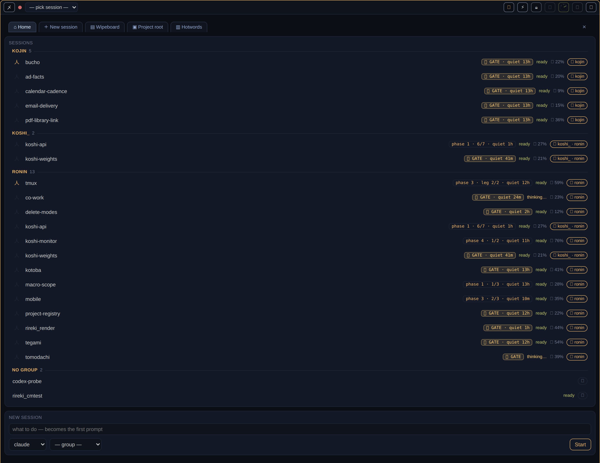
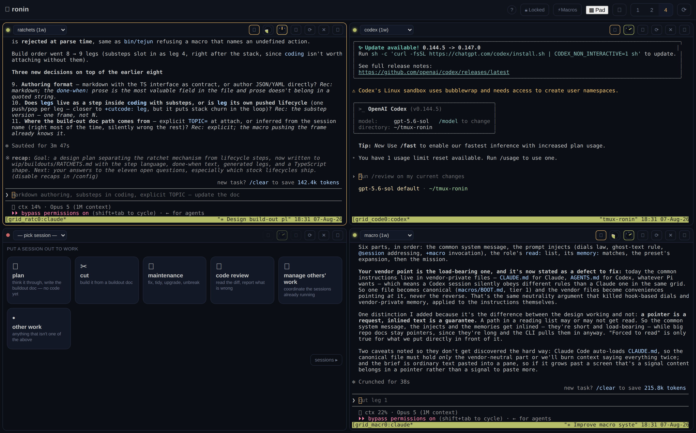

A co-working space for agents.
Explain it to me as…
You've heard of AI agents.
Actually running a few of them is the part nobody explains.
Ronin is where they work. One browser tab, a space each, on a computer you own — sharing the same files and passing work to each other. If you know Zapier, it's the same idea: Zapier doesn't replace your apps, it connects them.
A browser tab full of terminal tiles.
Each tile is an agent, running on a machine you own.
They share the same files, they can hand work to each other, and you can see what all of them are doing on one screen — from a desk or a phone.
A browser front end for tmux.
Any agent CLI in any pane, one working tree, one roster.
Ronin reads terminal output and nothing else — no vendor APIs, no adapters, no per-vendor code paths. Sessions outlive the tab because tmux owns them.
I kept logging into my home computer to check on agents I'd left running. It got old, and when I was out I couldn't check on them at all.
So I put them in a browser tab. Then I added a way to see how each one was doing, because once you have six of them you can't tell.
— Glen
I was SSHing into my home server so my agents could keep working while I was away. It got old. Every time I wanted to check one I opened another terminal, and I couldn't get to any of them when I was out.
So I put the terminals in a browser tab. Mac, phone, anywhere.
Then I added a few things. A way for the agents to work together. A way to see how far along each one is, because with six running you can't tell. And macros — shortcuts for stuff I was typing all the time anyway. Quicker, and the agent knows where to go.
— Glen
I was SSHing into my home server so my agents could keep working while I was away. Every check meant another terminal, and none of it was reachable from outside the house.
So I put the panes in a browser tab. The sessions stay in tmux; the tab is only a view, which is why it can be closed, crashed or opened on a different device without the work noticing.
Then the things that only matter once you're running several at once: a shared file the agents read and write so they coordinate without going through me, per-session progress so I can see who's blocked, and saved instruction sets for the things I was typing constantly.
— Glen
So each one keeps a short list: what it finished, what it's on, what it's waiting for. Something keeps that list up to date — so you look, instead of asking.
So each session keeps its own list — what it has finished, what it is on now, and what it is waiting for. A watcher keeps that list current. You don't ask them.
Each session maintains its own record: completed work, current leg, and the gate it is blocked at. A watcher process keeps it fresh, so the roster is a read rather than a round-trip to every agent in the grid.

Claude in one space, Codex in the next, both working on the same files. Swap whenever you feel like it — nothing has to move, and nothing is set up for one company.
Nothing in Ronin depends on which agent you run. Claude in one tile, Codex in the next, Hermes or something you wrote yourself in a third — same machine, same files. Ronin never reaches inside any of them, and when you switch, your work stays where it is.
Nothing in Ronin branches on which agent is running. Claude in one pane, Codex in the next, a shell script in a third, same checkout. There is no adapter layer to maintain and therefore none to break when a vendor ships a change.

If you run more than one, you are the go-between: you read what one did, then tell the next about it. Ronin puts them in the same place so they can pass work directly, and so you can watch all of them at once.
Run two or three agents on one machine today and they are strangers. They can't see what the others are doing, and you are the only thing joining them up — a tab each, one at a time. Ronin is the thin layer underneath that turns them into a co-working space.
Agents already coexist on a box; what they lack is a shared surface and a supervisor view. Ronin adds exactly that — a shared file surface for handoff, a session roster with per-session state, and a grid over the panes — and deliberately nothing else. The agent, the model and the machine stay yours.
Then you already have an agent, and it runs inside Ronin rather than instead of it. Keep using whichever one you like.
Yes — one you own, or one you rent for a few pounds a month. It doesn't run on ours, and that's the point: your files stay yours.
Those hand you everything at once, which is why they're so quick to start. The catch is that all of it belongs to one company, so leaving means moving everything. This is the other trade: slower to set up, nothing to move.
That's the thing this was built to fix. Shut the lid — the work carries on, because it was never happening in the browser.
Good — keep using it. That is an agent, and it runs inside Ronin, in a tile. Ronin doesn't replace the one you like; it gives you several at once and lets you tell at a glance which one is stuck.
They give you all of it at once, which is the fastest possible start and the reason they're good. The trade is that the space, the agent, the model and the machine all belong to one company, so leaving means moving everything. Ronin is the other trade: slower to set up, nothing to move.
Then you have the machine, and Ronin doesn't compete with it. Ronin is what you put on it.
That's the one this was built to stop. Close the lid and the work carries on, because the work was never happening in the browser tab.
Those are tenants, not competitors. Ronin supplies the pane and the coordination surface; it never supplies the agent, and it has no code path that knows which one you launched.
They own all four layers — space, agent, model, machine. Fastest possible start, and the exit cost is a full migration. Ronin owns one layer, so the exit cost is zero by construction rather than by policy.
That's the box layer, and Ronin installs onto it. It isn't an alternative to your host; it's what you run on it.
tmux on an always-on host removes the constraint rather than working around it. The browser tab becomes disposable, and the phone becomes a real client instead of a compromise.
Still reading as… everything below changes with this.
Nothing is hidden at any setting — it's the same product, described three ways.
+forkit: build the login page.We don't get your work, because there's nowhere for it to go. What you send to an agent is between you and the company that makes it, exactly as it is today.
No account, no sync, no server of ours it reports to. What leaves is whatever your agent sends to its model — your business with that vendor, on the terms you already agreed with them. Ronin is never in the path.
Ronin is a process on your machine with file-backed state. The open build emits nothing by default. The only traffic leaving is what the agent in the tile initiates to its own provider, under your credentials and your agreement with them.
So we don't claim your prompts never leave your box. They do — that's what a model is for, and any product claiming otherwise is describing a setup it doesn't ship. The claim scoped to what we do ship: Ronin is never in the path, and nothing here stops you pointing a tile at a model on the same machine, at which point nothing leaves at all.
In plain words: the work happens on your computer, not in the browser — so breaking the browser breaks nothing. We only look at what's on the screen, the same as you. Two different companies' agents can work on the same files at once. And long chats get worse, not better, so anything worth keeping gets written down in a file.
tmux is the truth. The real work runs on your machine; the browser is a window onto it. Terminal view only means Ronin reads what an agent prints and never digs into a vendor's internals for more — that costs features, and we'd rather pay it than break every time a vendor changes their mind. Vendor neutral is not "supported": no part of Ronin knows which agent you're running. Sessions are mortal is a working habit — start an agent with what it needs, have it write down what it learned, let it go.
Each of these was bought. Terminal-only cost a scrollback feature and a working set of dials, and the phrasing stays wounded on purpose — a principle that names its price is worth more than one that doesn't. Vendor neutrality is why there is no adapter layer to rot. And session mortality is the operational consequence of context degradation: long-lived sessions accumulate noise faster than signal, so the durable artefact is a file on disk, never the transcript.
Somewhere for your agents to work. That's all it is.
Ronin's scope ends where promises begin.
Ronin's scope ends where promises begin.